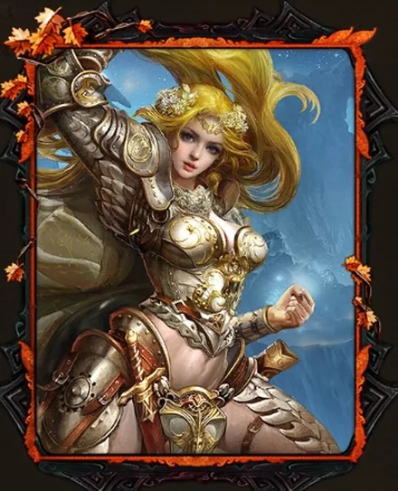
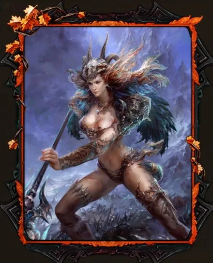
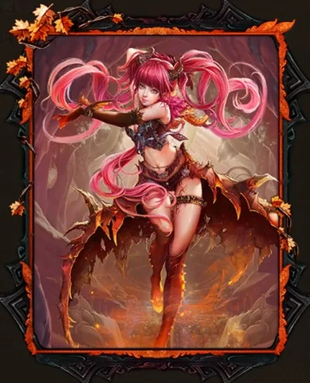
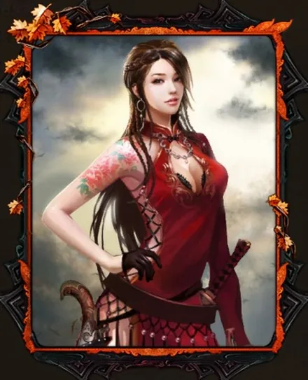
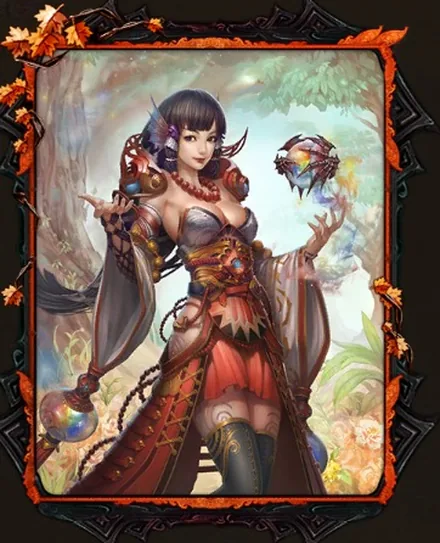
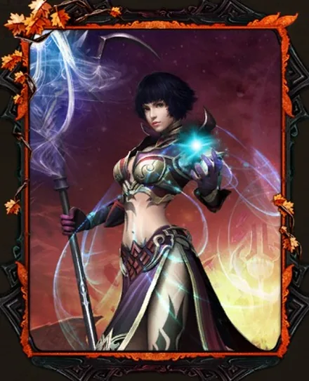

Cartas Nuema — As seis
São seis cartas S, uma de cada tipo, e juntas formam o conjunto Portal de Nuema. É o melhor conjunto do jogo porque dobra os atributos das suas cartas — e o mercado concorda: quem o tem pede seis vezes mais por um personagem.
Uma de cada tipo
Os seis espaços de carta aceitam um de cada tipo, e o conjunto ocupa exatamente todos eles. Faltando uma, não há conjunto.






Os nomes são os que o jogo imprime, acrescento chinês incluído — é por eles que você confere as suas.
O bónus: ele dobra
É aqui que o Portal de Nuema se separa de tudo o resto. Ter o conjunto completo dá 100% de bónus sobre os atributos das cartas — ou seja, o dobro do que elas dariam soltas.
O exemplo que torna isso concreto: uma Tensa com dois reborns dá 470 de espírito. Com as seis do conjunto equipadas, a mesma carta passa a dar 940.
E é por isso que a sexta carta vale mais do que parece. O bónus só existe com o conjunto inteiro. Com cinco, você tem os atributos de cinco cartas e mais nada; a sexta não acrescenta só o que ela própria dá — liga o dobro em todas as outras ao mesmo tempo. É o salto que faz guardar o baú Nuema para o fim.
O que o mercado diz
Que é o melhor conjunto não é opinião aqui — dá para contar. Lendo os anúncios do marketplace em 23 de outubro de 2026, 2.486 personagens à venda:
| Conjunto | Quantos têm | Preço mediano |
|---|---|---|
| Portal de Nuema | 614 | 600 TCC |
| Seis Soberanos da Chama da Vela | 891 | 100 TCC |
| nenhum conjunto completo | 981 | 50 TCC |
Seis vezes o preço do conjunto mais comum, doze vezes o de quem não tem conjunto nenhum.
E não é só porque quem é rico tem tudo. Isolando as 1.107 pessoas que carregam exatamente a mesma arma — nível de ataque 70, o patamar mais comum do topo — quem tem Nuema pede 500 TCC e quem não tem pede 132. Com o equipamento igualado, a diferença continua lá, quase quatro vezes.
Mais um número que diz o mesmo de outro jeito: 592 dos 614 que têm o conjunto têm as seis cartas no nível máximo. Quem monta Nuema, termina.
As três maneiras de conseguir
Baús de cartas
Saem cartas de qualquer qualidade, de C a S. É aleatório, é a fonte constante, e é por aqui que praticamente todo mundo começa — tirando as S que precisa no meio de muitas que não precisa.
Baú Nuema
Aqui você escolhe a carta. Por isso quase ninguém o abre cedo: guarda-se para o fim, quando já há cinco das seis e falta uma específica que o acaso não deu.
Isso tem rosto no mercado. Neste momento há 15 personagens à venda com exatamente cinco das seis, e a que mais falta é a Kestra 丝, de Batalha — a cinco deles. É literalmente o baú Nuema por usar.
Vale da Fênix, nível 105
A terceira fonte, para quem já está no nível 105.
O marketplace não diz a que conjunto uma carta pertence
Esta é a armadilha, e ela apanha quem compra personagem olhando a página
de detalhes: toda carta S imprime a mesma linha —
Seis Soberanos da Chama da Vela (6) — incluindo as seis do Nuema.
O (6) não é o tamanho do conjunto daquela carta; faz parte de
um texto fixo.
Nós verificámos isso até ao fim: a mesma linha aparece 1.142 vezes ao longo de catorze páginas de personagens, em cartas S, A e B, e num personagem que usa trinta e quatro cartas S diferentes — um conjunto de seis não cabe trinta e quatro. A linha não identifica nada.
Então, pela página deles, a única forma de saber é conferir as seis pelo nome, uma a uma, contra a tabela lá em cima.
Ou deixar isso para quem já o fez: o filtro do Portal PW mostra só quem tem o conjunto completo, porque a tabela dos conjuntos foi montada à mão aqui — o jogo não a publica em lado nenhum.
Os números de mercado desta página são de 23 de outubro de 2026 e mudam sozinhos — o mercado é recolhido de meia em meia hora, e o filtro mostra sempre os de agora. O que não muda são as seis cartas e os seus tipos.